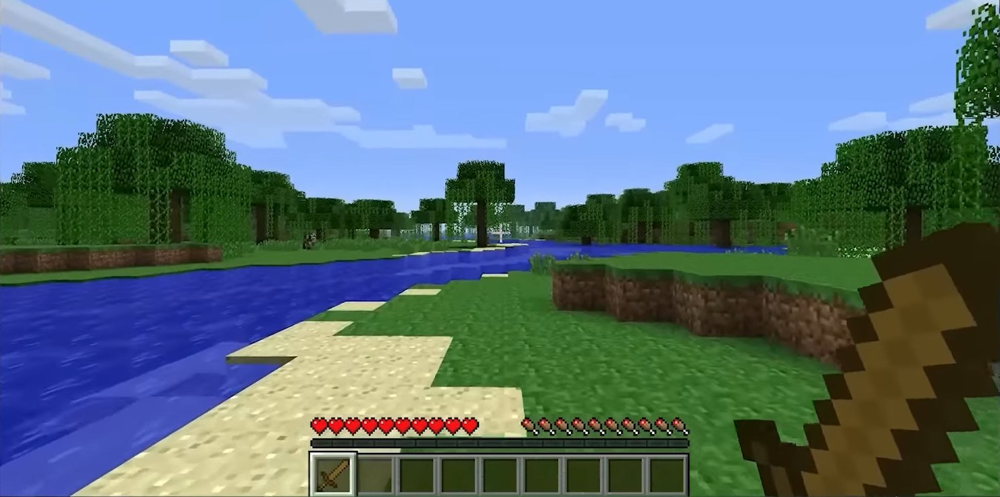

En la vida real06 / 09
SpaceX · cada vuelo de prueba es una entregaStarship

Los fans lo terminaron con él · snapshots semanales hasta hoy
- Se vende en alfa, incompleto2009
- Actualización cada viernes2010
- 1 000 000 de copias, aún en betaene 2011
- "Lanzamiento" oficialnov 2011

Amazoncada 11 s
Facebookvarias al día
Chrome6 → 4 semanas
Netflixmiles al día
Teslatu auto se actualiza
Manifiesto Ágil · Principio 3Fotos: SpaceX · Mojang